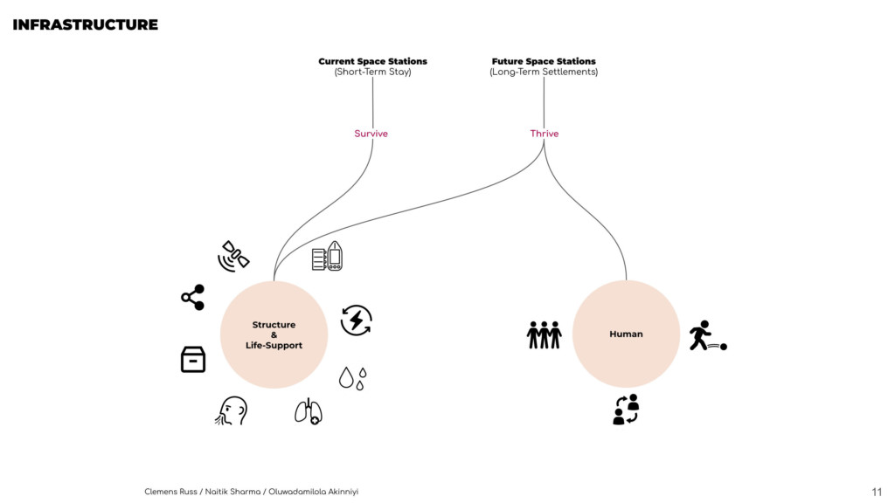
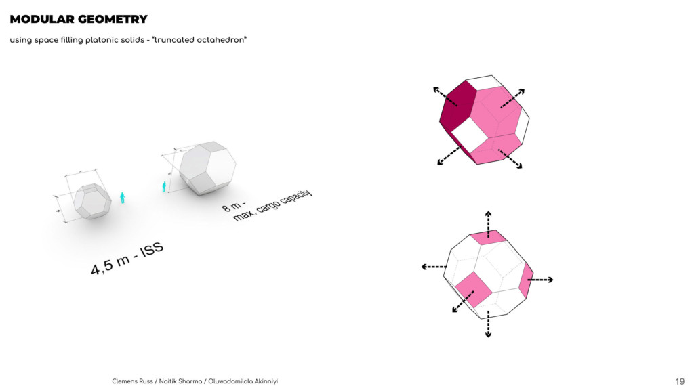
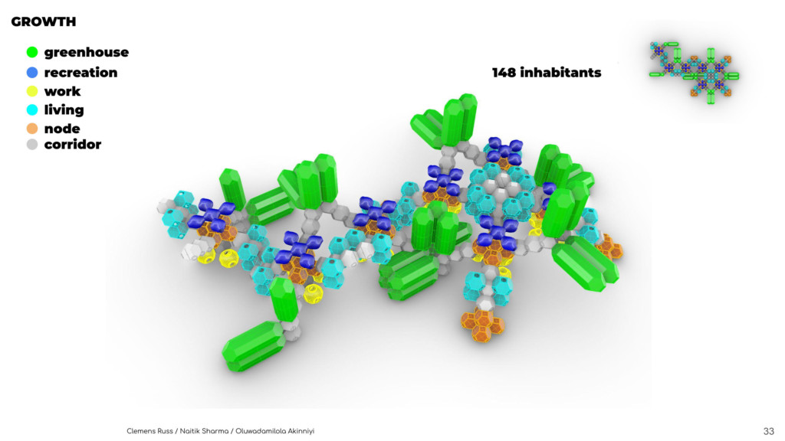
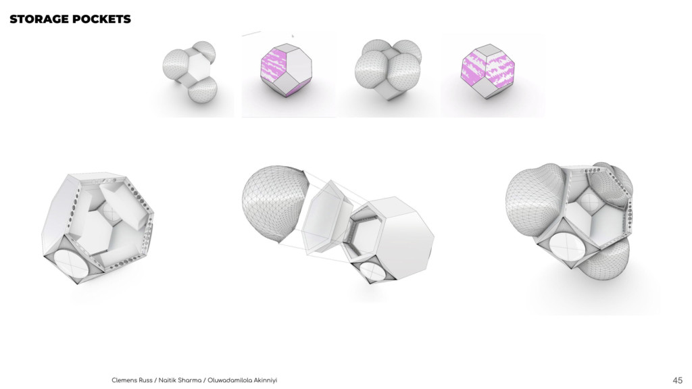

Rhizome
Rhizome imagines a low-Earth-orbit station that grows from six residents to 148 through a repeatable kit of living, working, greenhouse, recreation and infrastructure modules.
The proposal combines BIM coordination, modular growth, environmental control, energy generation and shared public space into an expandable orbital masterplan.
A habitat in low Earth orbit
The project begins with orbital context, access, radiation, microgravity and the operational constraints of building beyond Earth. The station is approached as a long-term settlement rather than a single finished object.
An eight-stage expansion sequence
The masterplan grows incrementally, allowing new modules, resource capacity and public programmes to arrive with the population.






Credits
- Studio
- BIM and Smart Construction Studio
- Team
- Clemens Russ, Naitik Sharma, Oluwadamilola Akinniyi
- Faculty
- Xavier De Kestelier
- Assistants
- Joanna Maria Lesna, Levent Ozruh
- Media
- Official project documentation — IAAC